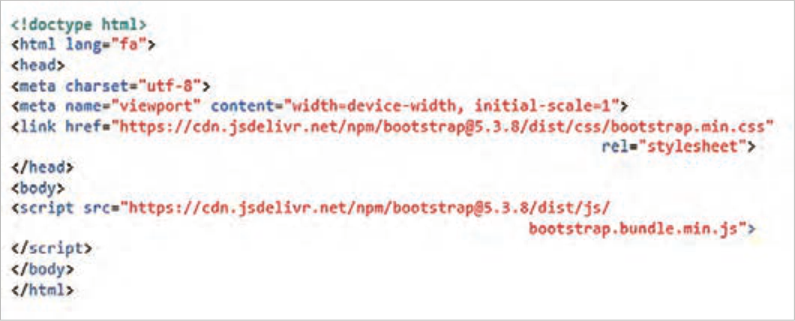
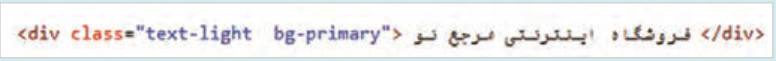
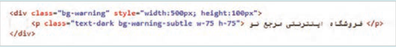
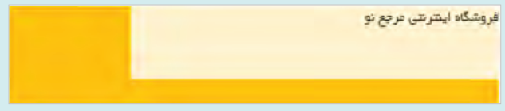

توسعه صفحات وب تعاملی با بوت استرپ
صفحه ۱۴۶
واحد یادگیری ١
توسعه صفحات وب تعاملی با بوت استرپ
آیا تابهحال اندیشیدهاید
چگونه میتوان طراحی وبسایتهای واکنشگرا و سازگار با موبایل را بدون نوشتن کدهای CSS پیچیده انجام داد؟
آیا فریم ورکهایی وجود دارند که کلاسهای آماده CSS را برای توسعهدهندگان وب ارائه کنند؟
بوتاسترپ چه کلاسها و اجزای آمادهای برای طراحی بخشهای مختلف صفحات وب دارد؟
چگونه میتوان با بوتاسترپ، فرمهای ورود اطلاعات را با سرعت بالا و به شکل مدرن طراحی کرد؟
چگونه میتوان طراحی صفحات وب را با استفاده از بوتاسترپ بهینه کرد تا در تمام دستگاهها به بهترین نحو نمایش داده شوند؟
در پایان از هنرجو انتظار میرود
1 طراحی کامل ساختار یک صفحه وب (شامل هدر، بدنه و فوتر) با استفاده از سیستم شبکهبندی (Grid System) بوتاسترپ، بهطوریکه طرحبندی در اندازههای مختلف صفحه نمایش (موبایل، تبلت، دسکتاپ) بهدرستی واکنش نشان دهد.
2 انتخاب و بهکارگیری کلاسهای کمکی (Utility Classes) مانند کلاسهای رنگ، فاصله (Margin/Padding)، سایهها و تایپوگرافی برای استایلدهی سریع و استاندارد به عناصر بدون نیاز به نوشتن CSS دستی برای موارد متداول.
3 ساخت یک نوار ناوبری (Navbar) کاربردی و زیبا که شامل لینکها، دکمهها و قابلیتهای واکنشگرا باشد و همچنین طراحی یک فوتر ساختاریافته.
4 مهارت در پیادهسازی اجزای رابط کاربری مانند کروسل (تصاویر اسلایدی) و آکاردئونها برای ارائه اطلاعات به شیوهای جذاب و پویا.
5 ساخت فرمهای ثبتنام یا تماس با استایلدهی کامل بوتاسترپ.
6 تغییر و لغو استایلهای پیشفرض بوتاسترپ با استفاده از روشهای سفارشیسازی برای هماهنگ کردن ظاهر وبسایت با برند یا نیازهای خاص پروژه.
استاندارد عملکرد
کلاسهای آماده بوتاسترپ را برای تعیین سبک عناصر مختلف صفحه مانند دکمهها، فرمها و منوها و... به کار ببرد و توانایی طراحی واکنشگرای صفحه را در دستگاههای مختلف داشته باشد.
صفحه ۱۴۷
تعریف فریم ورک
فریمورک (Framework) یک چارچوب نرمافزاری از پیش طراحیشده است که به منظور سرعت بخشیدن به فرایند طراحی و توسعه وبسایتها و اپلیکیشنهای وب بهکار میرود. یک فریم ورک با ارائۀ مجموعهای از ابزارها، کتابخانهها و الگوهای آماده، به توسعهدهندگان امکان میدهد که تنها روی ویژگیها و عملکردهای خاص پروژه تمرکز کنند و از کارهای تکراری و ابتدایی دوری کنند.
بوتاسترپ یک فریمورک متن باز برای طراحی ظاهر سایت است که شامل مجموعهای از کدهای آماده نوشتهشده با زبانهای Css،Html و Java Script است. توسعهدهندگان بهجای اینکه از صفر همه چیز را بنویسند از این کدهای آماده استفاده میکنند.
ویژگیهای Bootstrap: بوتاسترپ دارای ویژگیهای متعددی در زمینه طراحی صفحات وب است که باعث محبوبیت آن در میان توسعهدهندگان و طراحان وب شده است. این ویژگیها به شرح زیر است:
طراحی واکنشگرا (Responsive Design): بوتاسترپ دارای یک سیستم گرید 12 ستونی است که امکان طراحی واکنشگرا را برای دستگاههای مختلف فراهم میکند.
اجزای از پیش طراحیشده (Components): بوتاسترپ شامل اجزای مختلفی مانند دکمهها، فرمها، منوی ناوبری، کاردها، مدالها و نوار جستوجو است که بهصورت آماده قابل استفاده هستند.
پشتیبانی از جاوااسکریپت: بوتاسترپ حاوی کتابخانههای جاوااسکریپت برای ایجاد تعاملات و انیمیشنها در بخشهای مختلف صفحه است.
پشتیبانی از مرورگرها: بوتاسترپ با اکثر مرورگرهای مدرن مانند Chrome، Firefox، Safari و Edge سازگار است.
مستندات جامع: سایت رسمی بوتاسترپ (getbootstrap.com) دارای مستندات کامل برای آموزش نحوۀ استفاده از اجزا و کلاسهای بوتاسترپ است.
کاربردهای Bootstrap طراحی وبسایتهای واکنشگرا: طراحی و توسعه وبسایتهای شرکتی، فروشگاهی، وبلاگها و غیره.
ایجاد رابطهای کاربری جذاب: طراحی رابطهای کاربری زیبا و مدرن برای وبسایتها و اپلیکیشنهای وب.
پروژههای minimum viable product )MVP): ساخت نمونههای اولیه وبسایتها (MVP) و ارزیابی ایدههای طراحی.
طراحی فرمها: طراحی فرمهای زیبا و واکنشگرا توسط کلاسهای آماده بوتاسترپ.
صفحه ۱۴۸
بهکارگیری بوتاسترپ در صفحه وب برای استفاده از امکانات بوتاسترپ در یک صفحه وب، ابتدا باید فایل HTML پایه ایجاد شود و سپس فایلهای CSS و جاوااسکریپت بوتاسترپ به آن الحاق شود. فایل پایه شامل برچسبهای <DOCTYPE!>،
<html>، <head>، متاتگهای viewport، <title> و <body> است.
استفاده از CDN1 در صفحه وب
کار کارگاهی
یک صفحه وب با نام test-bs.html ایجاد کنید و برچسبهای اولیه آن را بنویسید. سپس سایت getbootstrap.com را باز کنید. صفحه را تا بخش Include via CDN پیمایش کنید تا کدهای آماده <Link> و <script> را مشاهده کنید. کد <link> را در بخش <head> و کد <script> را قبل از <body/> کپی کنید. این دو کد فایلهای CSS و جاوااسکریپت بوت استرپ را به صفحه وب الحاق میکنند.
کد لینک و اسکریپت بوتاسترپ حاوی یک ویژگی بهنام Integrity است که برای حفظ امنیت فایل دریافت شده از CDN استفاده میشود. با این حال امکان استفاده از کلاسهای بوتاسترپ بدون Integrity هم فراهم است. به همین دلیل در کد فوق ویژگی Integrity حذف شده است تا خوانایی کد افزایش یابد ولی استفاده از این ویژگی در پروژههای واقعی ضروری است.

کلاسها و کامپوننتهای بوتاسترپ کلاسهای بوتاسترپ مجموعهای از استایلهای از پیش تعریف شده هستند که امکان طراحی سریع و راحت اجزای رابط کاربری صفحات وب را فراهم میکنند. این کلاسها که با استفاده از CSS ایجاد شدهاند، به توسعهدهنده وب کمک میکنند که با نوشتن کدهای CSS کمتر، عناصری کاربرپسند و واکنشگرا را به صفحه وب اضافه کند.
)شبکه توزیع محتوا( CDN: Content Delivery Network١
صفحه ۱۴۹
کامپوننتهای بوتاسترپ عناصر از پیش طراحی شدهای هستند که امکان طراحی سریع و آسان رابط کاربری وبسایتها را فراهم میکنند. توسعهدهندۀ وب میتواند به کمک این عناصر آماده، بدون نوشتن کدهای CSS و JavaScript، عناصر کاربرپسند و واکنشگرا را به صفحه وب اضافه کند. از جمله کامپوننتهای بوتاسترپ میتوان به دکمه، نوار ناوبری1، کروسل2، آکاردئون3 و مُدال4 اشاره نمود. این بخش به معرفی کلاسها و کامپوننتهای بوتاسترپ میپردازد.
کلاسهای Utility : کلاسهای Utility در بوتاسترپ، بهطور ویژه برای استایلدهی عناصر صفحه استفاده میشوند و بهطور مستقیم با HTML و CSS کار میکنند. برای استفاده از این کلاسها نیازی به جاوااسکریپت نیست. کلاسهای آماده بوتاسترپ برای تعیین رنگ، اندازه عناصر، فواصل، خط دور، سایه و غیره قابل استفاده هستند.
کلاسهای رنگ: کلاسهای رنگ بوتاسترپ به دو دستۀ رنگهای زمینه و رنگ متن تقسیم میشوند.
هر یک از کلاسهای رنگ دارای مفهوم و رنگ مشخصی هستند. کلاسهای رنگ زمینه و متن به ترتیب دارای پیشوند bg و text هستند. برخی از این کلاسها در جدول زیر گردآوری شده است:
جدول 1 کلاسهای رنگ Bootstrap
کلاس رنگ زمینه
کلاس رنگ متن
مفهوم
bg-primary
text-primaryرنگ اصلی
bg-secondary
text-secondaryرنگ ثانویه
bg-success
text-successرنگ موفقیت
bg-danger
text-dangerرنگ خطر
bg-warning
text-warningرنگ هشدار
bg-info
text-infoرنگ اطلاعات
bg-light
text-lightرنگ روشن
bg-dark
text-darkرنگ تیره
1- نوار ناوبری (Navbar): نوار بالاتری صفحه که معمولاً شامل لوگو، لینکها و منوهاست.
2- کروسل (Carousel): یک عنصر تعاملی که مجموعهای از تصاویر یا محتوا را به صورت پشت سرهم در یک فضای مشخص نمایش میدهد و کاربر میتواند بین آنها جابهجا شود.
3- آکاردئون (Accordion): یک بخش قابل باز و بسته شدن برای نمایش محتوا.
4- مُدال (Modal): پنجره یا کادر محاورهای که روی محتوای صفحه ظاهر میشود.
صفحه ۱۵۰
کنجکاوی
برای کسب اطلاعات بیشتر دربارۀ سایر کلاسهای رنگ، عبارت Bootstrap5.3 background و Bootstrap5.3 colors را در گوگل جستوجو کنید.
استفاده از کلاسهای رنگ بوت استرپ
کار کارگاهی
فایل test-bs.html را باز کنید، سپس یک عنصر <div> با مشخصات زیر بعد از برچسب body درج کنید.

فایل را ذخیره کنید و نتیجه را در مرورگر بررسی کنید.
به انتهای کلاس رنگ، عبارت subtle را اضافه کنید (bg-primary-subtle) و نتیجه را در مرورگر مشاهده کنید.
کلاسهای تعیین اندازه (Sizing) بوتاسترپ دارای دو مجموعه کلاس *-w و *-h برای تعیین پهنا و ارتفاع عناصر است. پارامتر * میتواند جایگزین اعداد 25،50، 75 و 100 و عبارت auto شود. اختصاص کلاس w-75 برای یک عنصر باعث میشود که پهنای عنصر برابر 75% پهنای عنصر والد باشد. کلاسهای w-auto و h-auto پهنا و ارتفاع یک عنصر را به اندازۀ محتوای آن تنظیم مینمایند.
استفاده از کلاسهای Sizing
کار کارگاهی
در فایل test-bs.html یک عنصر div دیگری به شکل زیر به صفحه وب اضافه کنید. این عنصر حاوی یک عنصر پاراگراف است که پهنا و ارتفاع پاراگراف، 75% پهنا و ارتفاع عنصر div خواهد بود.

در کد فوق پهنا و ارتفاع عنصر پاراگراف توسط کلاسهای w-75 و h-75 مشخص شده است. فایل را ذخیره کنید و نتیجه را در مرورگر بررسی کنید.

Developing interactive web pages with Bootstrap
Page 146
Learning unit 1
Developing interactive web pages with Bootstrap
Have you ever thought
How can you design responsive, mobile-friendly websites without writing complex CSS code?
Are there frameworks that provide ready-made CSS classes for web developers?
What ready-made classes and components does Bootstrap have for designing different parts of web pages?
How can you use Bootstrap to design data-entry forms quickly and in a modern style?
How can you optimize web page design with Bootstrap so that pages display in the best way on all devices?
At the end, the student is expected to
1 Fully design the structure of a web page (including header, body, and footer) using Bootstrap’s grid system (Grid System), so that the layout responds correctly on different screen sizes (mobile, tablet, desktop).
2 Select and use utility classes (Utility Classes) such as color, spacing (Margin/Padding), shadow, and typography classes for fast, standard styling of elements without writing manual CSS for common cases.
3 Build a practical and attractive navigation bar (Navbar) that includes links, buttons, and responsive features, and also design a structured footer.
4 Gain skill in implementing user-interface components such as carousels (sliding images) and accordions to present information in an engaging and dynamic way.
5 Build registration or contact forms with complete Bootstrap styling.
6 Change and override Bootstrap’s default styles using customization methods to match the website’s appearance with the brand or the specific needs of the project.
Use Bootstrap’s ready-made classes to set the style of different page elements such as buttons, forms, menus, and so on, and be able to design a responsive page on different devices.
Page 147
Definition of a framework
A framework (Framework) is a pre-designed software framework used to speed up the process of designing and developing websites and web applications. By providing a set of tools, libraries, and ready-made patterns, a framework lets developers focus only on the specific features and functions of the project and avoid repetitive, basic work.
Bootstrap is an open-source framework for designing a site’s appearance that includes a set of ready-made code written in the languages Css, Html, and Java Script. Instead of writing everything from scratch, developers use this ready-made code.
Features of Bootstrap: Bootstrap has many features for designing web pages that have made it popular among web developers and designers. These features are as follows:
Responsive design (Responsive Design): Bootstrap has a 12-column grid system that makes responsive design possible for different devices.
Pre-designed components (Components): Bootstrap includes various components such as buttons, forms, navigation menus, cards, modals, and search bars that are ready to use.
JavaScript support: Bootstrap contains JavaScript libraries for creating interactions and animations in different parts of the page.
Browser support: Bootstrap is compatible with most modern browsers such as Chrome, Firefox, Safari, and Edge.
Comprehensive documentation: The official Bootstrap site (getbootstrap.com) has complete documentation for learning how to use Bootstrap’s components and classes.
Uses of Bootstrap Designing responsive websites: Designing and developing corporate sites, stores, blogs, and so on.
Creating attractive user interfaces: Designing beautiful, modern user interfaces for websites and web applications.
minimum viable product (MVP) projects: Building website prototypes (MVP) and evaluating design ideas.
Designing forms: Designing beautiful, responsive forms using Bootstrap’s ready-made classes.
Page 148
Using Bootstrap on a web page To use Bootstrap’s features on a web page, you must first create a basic HTML file and then attach Bootstrap’s CSS and JavaScript files to it. The basic file includes the <DOCTYPE!>,
<html>، <head>، متاتگهای viewport، <title> و <body> است.
Using CDN1 on a web page
Workshop
Create a web page named test-bs.html and write its initial tags. Then open the site getbootstrap.com. Scroll the page to the Include via CDN section so you can see the ready-made <Link> and <script> codes. Copy the <link> code into the <head> section and the <script> code before <body/>. These two codes attach Bootstrap’s CSS and JavaScript files to the web page.
The Bootstrap link and script code contains an attribute called Integrity that is used to keep the file received from the CDN secure. However, it is also possible to use Bootstrap classes without Integrity. For that reason, in the code above the Integrity attribute has been removed to make the code more readable, but using this attribute is essential in real projects.
Bootstrap classes and components Bootstrap classes are a set of predefined styles that make it possible to design user-interface parts of web pages quickly and easily. These classes, which were created using CSS, help the web developer add user-friendly, responsive elements to the web page while writing less CSS code.
)شبکه توزیع محتوا( CDN: Content Delivery Network١
Page 149
Bootstrap components are pre-designed elements that make it possible to design website user interfaces quickly and easily. With these ready-made elements, the web developer can add user-friendly, responsive elements to the web page without writing CSS and JavaScript code. Among Bootstrap’s components are the button, navigation bar1, carousel2, accordion3, and modal4. This section introduces Bootstrap’s classes and components.
Utility classes: Utility classes in Bootstrap are used especially for styling page elements and work directly with HTML and CSS. You do not need JavaScript to use these classes. Bootstrap’s ready-made classes can be used to set color, element size, spacing, border, shadow, and so on.
Color classes: Bootstrap’s color classes are divided into two groups: background colors and text colors.
Each color class has a specific meaning and color. Background and text color classes have the prefixes bg and text, respectively. Some of these classes are collected in the table below:
Table 1 Bootstrap color classes
Background color class
Text color class
Meaning
bg-primary
text-primaryرنگ اصلی
bg-secondary
text-secondaryرنگ ثانویه
bg-success
text-success Success color
bg-danger
text-dangerرنگ خطر
bg-warning
text-warningرنگ هشدار
bg-info
text-info Information color
bg-light
text-lightرنگ روشن
bg-dark
text-dark Dark color
1- Navigation bar (Navbar): The top bar of the page that usually includes the logo, links, and menus.
2- Carousel (Carousel): An interactive element that displays a set of images or content one after another in a defined space, and the user can move between them.
3- Accordion (Accordion): A section that can open and close to display content.
4- Modal (Modal): A window or dialog box that appears over the page content.
Page 150
Try this
For more information about other color classes, search for the phrases Bootstrap5.3 background and Bootstrap5.3 colors on Google.
Using Bootstrap color classes
Workshop
Open the file test-bs.html, then insert a <div> element with the following settings after the body tag.
Save the file and check the result in the browser.
Add the word subtle to the end of the color class (bg-primary-subtle) and view the result in the browser.
Sizing classes (Sizing) Bootstrap has two sets of classes, *-w and *-h, for setting the width and height of elements. The * parameter can be replaced with the numbers 25, 50, 75, and 100 and the word auto. Assigning the class w-75 to an element makes the element’s width equal to 75% of the parent element’s width. The classes w-auto and h-auto set an element’s width and height to the size of its content.
Using Sizing classes
Workshop
In the file test-bs.html, add another div element to the web page as shown below. This element contains a paragraph element whose width and height will be 75% of the width and height of the div element.
In the code above, the width and height of the paragraph element are set by the classes w-75 and h-75. Save the file and check the result in the browser.